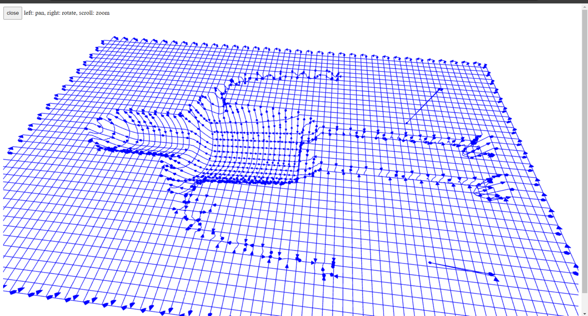
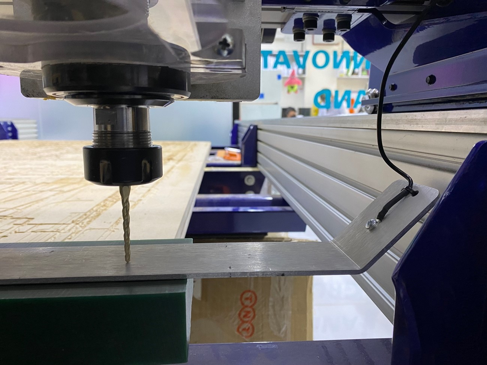
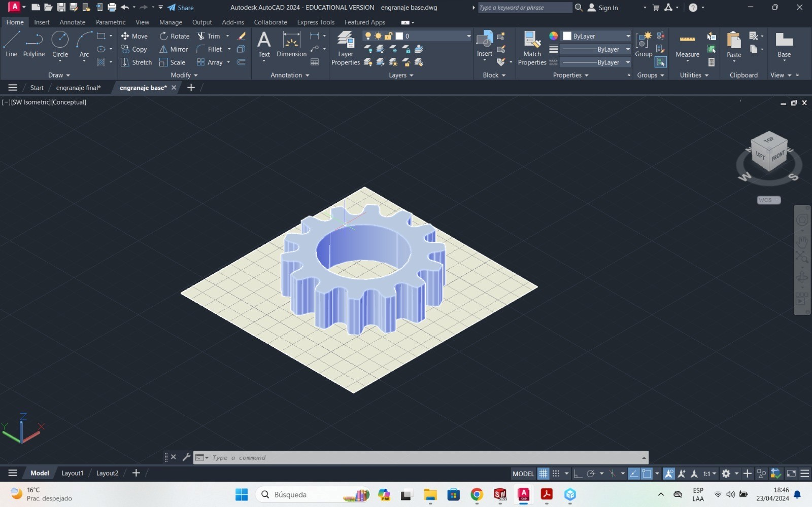

Welcome to Week 12
Molding and casting
Hey! now we will learn about Molding and Casting, for this week we have the following group and individual assignments:
- Group assignment:
- Individual assignment:
o Review the safety data sheets for each of your molding and casting materials - Done
o Make and compare test casts with each of them - Done
o Compare printing vs milling molds - Done
o Design a mold around the process you'll be using, produce it with a smooth surface finish, and use it to cast parts. - Done
GROUP ASSIGNMENT
Let's start with the group assignment by reviewing the safety sheets of our materials.
Silicon Peru, Y-805a
The following silicone consists of 2 parts, a white liquid which is the silicone and the curing agent. Curing time is 4 to 8 hours. It has good tear resistance and excellent temperature resistance, in addition to being dyed in the natural color of the skin.
| CARACTERISTIC | INSPECTION METHOD | VALUE |
|---|---|---|
| MIX RATIO | A:B | 100:100 |
| COLOR | --- | skin color |
| POT LIFE | 30°C | 40-50 mins |
| Demold time | 30° C | 4-5h |
Upon reviewing the technical specifications, we commence utilizing the material and blending it in accordance with the provided characteristics and values. We've included a photograph of the process and it's essential to adhere to personal protective equipment guidelines as they are mandatory for handling this material.
Then we started thinking to get the right ratio of silicone A to B based on the data sheets.
After combining both materials, we begin to move the mixture to obtain a uniform liquid to obtain the result of the silicone test.
Finally, after waiting for about 4 hours, we were able to get the sample result, It turned out well
well let's continue with the next material….
Silikast Epoxy Craft
The following epoxy resin consists of 2 parts, a white liquid that is the resin and the curing agent. Curing time is 12 to 16 hours. It has good tear resistance and excellent temperature resistance.
| CARACTERISTIC | INSPECTION METHOD | VALUE |
|---|---|---|
| MIX RATIO | A:B | 1:1 |
| COLOR | --- | Transparent |
| POT LIFE | 30°C | 40-50 mins |
| Demold time | 30° C | 12-16h |
Upon reviewing the technical specifications, we commence utilizing the material and blending it in accordance with the provided characteristics and values. We've included a photograph of the process and it's essential to adhere to personal protective equipment guidelines as they are mandatory for handling this material
Then we started thinking to get the right ratio of silika A to B based on the data sheets.
After combining both materials, we begin to move the mixture to obtain a uniform liquid to obtain the result of the silicone test.
Finally, after waiting for about 12 hours, we were able to get the sample result, It turned out well
Well, now let's make a comparison between a 3D printing mold and a CNC milling one, For this exercise we will use a file from the THINGUIVERSE repository, which I leave the link here
Let's start by making the 3D printing of our mold, for this we will take our model to the CURA, let's start!
Here we have part in 3D print
I start the printing process!....
Well now we have it ready
Now let's prepare the silicone mixture to test how the mold turned out and wait patiently for it to dry.
While we wait, let's move forward with the machining of this solid to be able to compare the results.
For this process we will use the MODS CE and the machine to use will be the shopbot, let's get to work, first let's enter the solid.
then we configure the size of the drill bit in this case we will use a 1/8
And we calculate:
Ok now calibrate the bed height in the shopbot to start machining…
Let's start with the machining of our solid
We wait a little and that's it, we have our piece ready.

Now let's prepare the mixture and see the results…

Let's wait for both tests to dry, they look very good..
Once dry, let's take out the pieces, the one on the right side is from the 3D printing and the left side is from the CNC cutting.
We can well see that there is a greater amount of detail in the 3D printing mold, and being more practical also offers us better casting quality.
INDIVIDUAL ASSIGNMENT
For the individual assignment we will begin by designing the solid that we want to replicate, a gear that will be cast with part A and part B.
We will use the AutoCAD program for the design, we start by drawing the gear and then do the extrusion.
Now we extrude the central part so we can select that area
And ready we have our gear..
Well now we can build our negatives so we draw a square a little bigger than the gear and we will extrude it
We will make a hole to pour the silicone into both parts
Okay now let's take out our negatives A and B
Let's take our solids to the 3D printer, so we can make our solid replication..
Ready now we have our negatives!!!!
Now let's mix our silicone so we can melt it in our mold.
Brilliant! We have it ready, now we pour the mixture into our mold
Finally we waited a little, and that's it! We already have our cast piece, it looked great!
And the result is…
If you want to replicate any of these experiments, I leave you here all the documents so you can achieve it.
See you next Week.